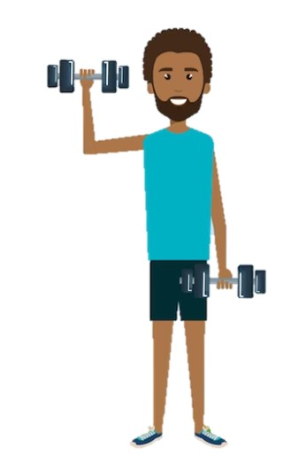

Crianças e adolescentes
Em pelo menos três dias nas semana realizar 60 minutos por dia de atividades aeróbicas de moderada a vigorosa intensidade, assim como aquelas que fortalecem os músculos e ossos devem ser incorporadas.

Adultos
Realizar pelo menos 150 a 300 minutos semanais de atividade física aeróbica de moderada intensidade ou de 75 a 150 minutos em uma intesidade vigorosa. Em pelo menos dois dias da semana realizar atividades de fortalecimento muscular que envolvam os principais grupos musculares.
Idosos
Realizar pelo menos 150 a 300 minutos semanais de atividade física aeróbica de moderada intensidade ou de 75 a 150 minutos em uma intesidade vigorosa. Além disso os idosos também devem realziar atividades físicas multicomponetes que enfatizem o equilíbrio funcional e o treinamento de força com moderada intensidade ou maior, em 3 ou mais dias da semana, para aumentar a capacidade funcionale prevenir quedas.